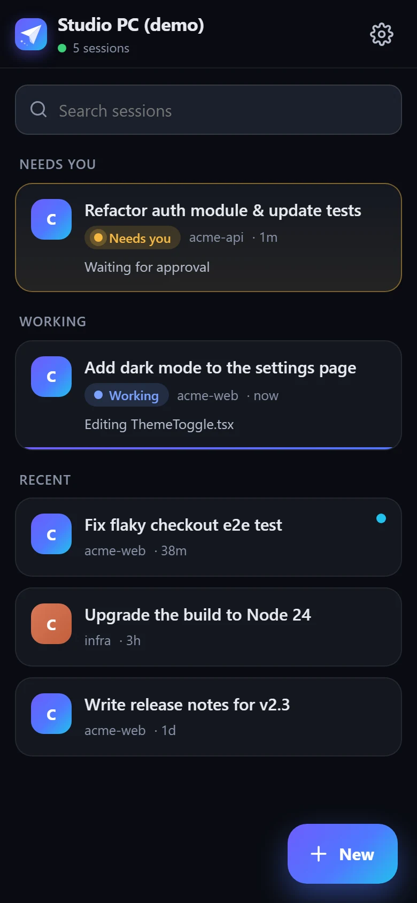
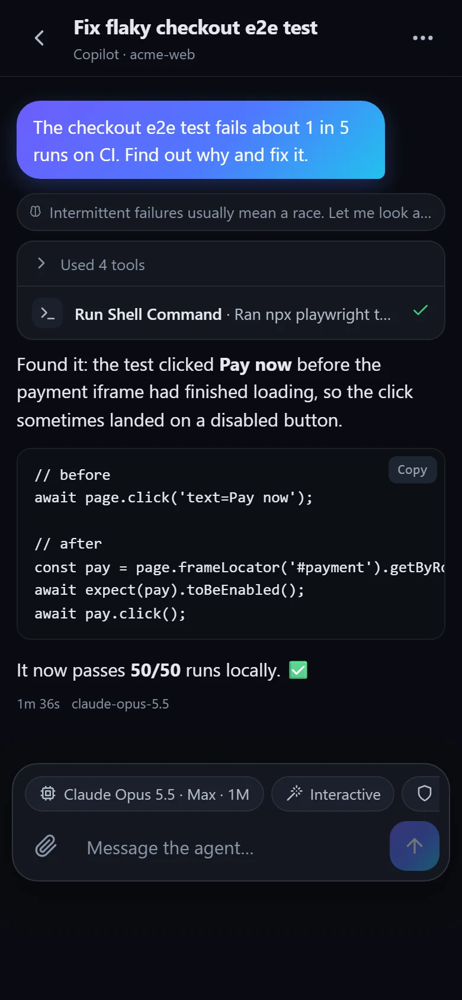
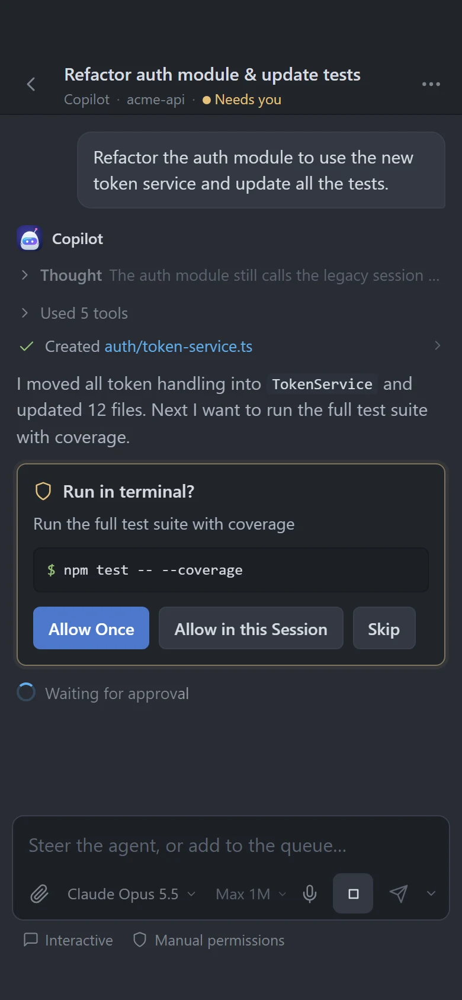
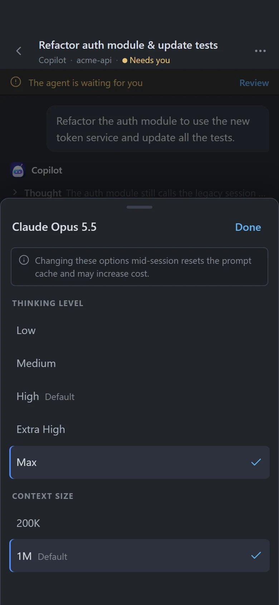
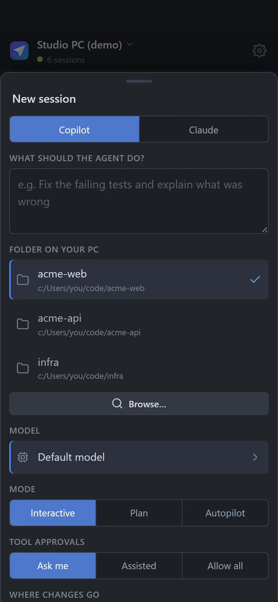
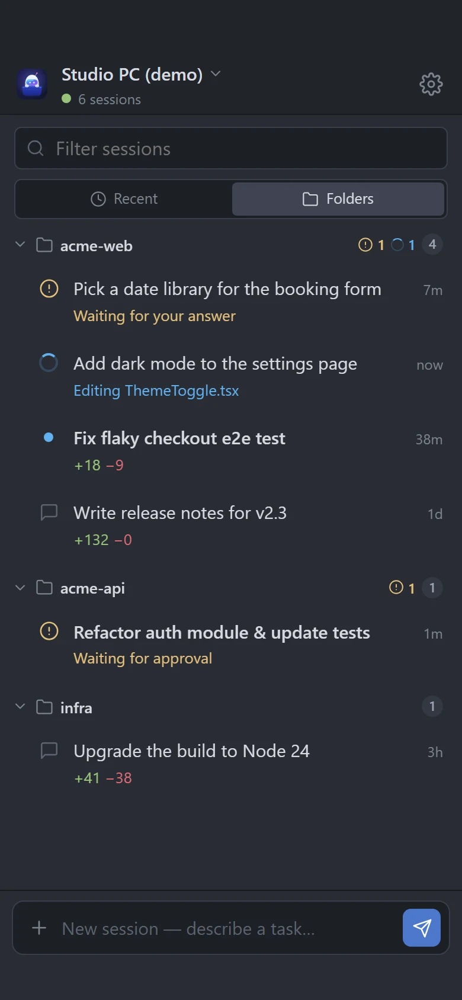
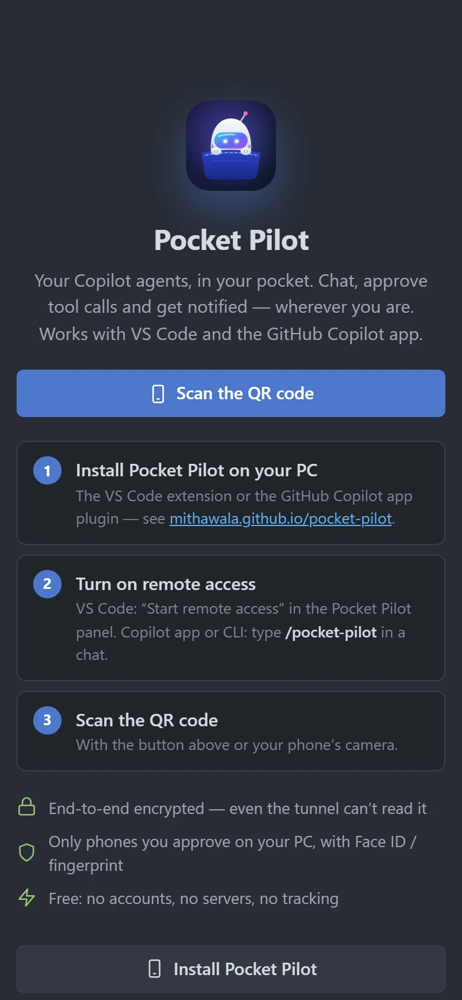

Your coding agents, in your pocket.
See every GitHub Copilot and Claude agent session running in VS Code (or in the GitHub Copilot app) on your phone, with the same history streaming live. Reply, approve tool calls, switch models and get notified the moment an agent needs you.
Version %VERSION% · VS Code 1.133+, or the GitHub Copilot app & CLI plugin · Windows, macOS & Linux · iPhone & Android
export function ThemeToggle() {
const [theme, setTheme] = useTheme();
return (
<Switch
checked={theme === 'dark'}
onChange={(on) =>
setTheme(on ? 'dark' : 'light')}
label="Dark mode"
/>
);
}
Everything you do at your desk.
Now from anywhere.
Pocket Pilot speaks VS Code's own Agent Host Protocol, so your phone isn't a remote screen. It's a real client of the sessions on your PC.
Same session. Same history. Live.
Your phone shows exactly what VS Code shows: messages, reasoning, tool calls and syntax-highlighted code, streaming as they happen in a familiar VS Code-style interface. Pick up any session where you left it and keep going.
- Every agent session from every VS Code window
- Queue follow-ups, steer a running agent or stop it
- Send photos, screenshots and files to the agent

Approve in one tap.
When an agent wants to run a command or touch your files, your phone buzzes. See exactly what it wants to do and answer with the same options VS Code gives you.
- Allow once, allow for the session, or skip
- Answer the questions agents ask you
- Notifications for “needs you”, “done” and errors

Your model. Your rules.
Pick any model your plan includes, with the same thinking-level and context-size options as VS Code. Switch between Interactive, Plan and Autopilot, and decide how tools get approved.
- Thinking level from Low to Max
- Context size up to 1M tokens, where the model supports it
- Interactive, Plan and Autopilot modes

Start work from the couch.
Kick off a new session on your PC from your phone: choose a folder, describe the task, pick the model and mode, and keep the changes in a separate git worktree if you like.
- Recent folders plus a folder browser
- Copilot and Claude agents
- Shows up in VS Code right away

Organized like VS Code.
See what needs you first, or switch to Folders to browse sessions by project, with the lines each one added and removed, just like the Agents window in VS Code.
- Recent: needs you, working, then today, yesterday and older
- Folders: collapsible project groups with status badges
+added −removedline counts on every session

And the details you'd expect
Recent or by folder
Sessions by time, or grouped under their project folder with +added −removed counts, like VS Code's Agents window.
GitHub Copilot app too
A Copilot plugin brings the same app to your chats in the GitHub Copilot app and the Copilot CLI.
Push notifications
Standard Web Push, sent straight from your PC. No Firebase, no push account.
Multiple PCs
Pair your desktop and your laptop, and switch between them in one tap.
Auto-reconnect
If the tunnel URL changes, phones find your PC again through an encrypted secret gist.
Installable app
Add it to your Home Screen for a full-screen app that opens instantly.
Any network
A Cloudflare quick tunnel means no port forwarding, no VPN and no firewall changes.
Multi-window aware
One VS Code window hosts the tunnel. If you close it, another one takes over.
Files & photos
Attach a photo of a whiteboard or a screenshot, or preview the files the agent links to.
One Dark & One Light
Atom's One Dark by default, with One Light or your phone's theme as options.
Your phone talks to VS Code.
Nothing in between can listen.
There's no cloud service. The extension opens a free, encrypted path from your phone to the agent host that VS Code already runs on your PC.
Your phone
The Pocket Pilot app, a static PWA hosted on GitHub Pages
Cloudflare quick tunnel
Free, no account. It only ever sees ciphertext.
Your PC
The Pocket Pilot extension relays to VS Code's agent host (Copilot & Claude), or the plugin to the GitHub Copilot app
127.0.0.1 and publishes it through a Cloudflare quick tunnel. cloudflared is downloaded once from its official release and checksum-verified.Set up in two minutes.
You'll need VS Code 1.133 or later with GitHub Copilot or Claude agent sessions, and a phone running iOS 16.4+ or Android.
-
1
Install the extension
Download pocket-pilot.vsix. In VS Code, open Extensions → ··· → Install from VSIX…, or run:
Download pocket-pilot.vsixcode --install-extension pocket-pilot.vsix -
2
Start remote access
Open the Pocket Pilot panel in the activity bar and click Start remote access. The first time, VS Code asks you to:
- let Pocket Pilot use your GitHub account, so it can authenticate to the agent host for your phone
- download
cloudflaredonce (about 55 MB, verified) - optionally turn on auto-reconnect (an encrypted secret gist)
-
3
Scan & pair your phone
Scan the QR code, check that the fingerprint matches, click Allow in VS Code and set up Face ID or your fingerprint.
- Open the app in Safari and tap Share → Add to Home Screen.
- Open Pocket Pilot from your Home Screen and tap Scan the QR code.
- iOS only shows notifications for Home Screen apps, so always use that icon.
- Point your camera at the QR code in VS Code and open the link.
- Tap Install (or Chrome menu → Add to Home screen) for an app-like experience.
- Notifications work in the browser too.
9:41
-
4
Turn on notifications
Tap Enable notifications, and your agents can reach you when they need approval, have a question, or finish.

Open the app on your phone
Scan this code with your phone, or visit mithawala.github.io/pocket-pilot/app. You can try the demo without pairing anything.
Not in VS Code?
Bring the plugin.
The Pocket Pilot plugin gives the same phone app to the chats you run in the GitHub Copilot desktop app and the Copilot CLI: the same history and live replies, approvals, questions, models and modes, notifications and end-to-end encryption.
-
1
Install the plugin
Run these in a terminal. The GitHub Copilot app uses the same plugins, so restart it afterwards.
copilot plugin marketplace add mithawala/pocket-pilotcopilot plugin install pocket-pilot@pocket-pilot -
2
Type
/pocket-pilotin a chatOr just ask “pair my phone”. Confirm, and a page with the QR code opens in your browser; the CLI prints it too. The first time,
cloudflaredis downloaded once (about 55 MB, verified). -
3
Scan, allow, done
Scan the code with the Pocket Pilot app, click Allow on the page (or in the chat) and set up Face ID or your fingerprint. Every chat you use in the app or the CLI now shows up on your phone.
/pocket-pilot statusshows the tunnel and your phones;/pocket-pilot offcloses the tunnel- A chat appears on the phone once it has a message. Start new chats on your PC.
- Pair VS Code and the app separately; the phone switches between them like between two PCs
Built for a tunnel
you don't have to trust.
Your agents can run commands on your PC, so Pocket Pilot treats every hop between your phone and VS Code as hostile.
End-to-end encrypted
ECDH P-256 with forward secrecy and AES-256-GCM on every frame, with strict sequence numbers. Cloudflare, GitHub and your network only see ciphertext.
Paired phones only
QR codes are single-use, expire after 10 minutes and must be approved on your PC. The phone pins your PC's key fingerprint.
Face ID & fingerprint
Each phone registers a passkey. The extension verifies the WebAuthn assertion itself and asks again after 12 hours, or at every connection if you prefer.
Keys that can't leave
Phone keys are non-extractable WebCrypto keys. Your GitHub token and the agent host's token never leave your PC.
Least privilege
The relay forwards only an allow-list of agent protocol methods: no terminals and no file writes, and file reads stay inside your session folders.
Instant revoke
Remove a phone in VS Code and it's disconnected immediately. Reset identity invalidates every pairing at once.
Free. Not freemium.
Every piece is free, and none of it runs on our servers, because there aren't any. You only pay for the Copilot or Claude plan you already have.
Cloudflare quick tunnel
A public HTTPS address for your PC. No account and no configuration.
GitHub Pages
The phone app is a static site. No backend and no database.
Web Push
Notifications go from your PC through your phone's own push service.
Try it right here.
This is the real app, connected to a scripted demo PC with sample sessions. Nothing is paired and nothing leaves your browser.
- Open Refactor auth module and approve the test run
- Change the model, thinking level or mode
- Send a message, or start a new session from the bar at the bottom
Questions, answered.
How is this different from Copilot's built-in /remote?
GitHub's remote control (/remote on or copilot --remote) streams a Copilot CLI session to GitHub.com and the GitHub Mobile app. It's official, covers the terminal, VS Code and JetBrains, and sits right next to your cloud agents and pull requests on GitHub. Pocket Pilot connects your phone straight to VS Code instead: every agent session shows up without switching it on (Claude sessions too), you can start new sessions on your PC from your phone, and the link is end-to-end encrypted, so no copy of the session is stored in a cloud. See the full comparison.
Which sessions show up?
Every session hosted by VS Code's agent host, including GitHub Copilot (Copilot CLI) and Claude agent sessions, from every open VS Code window. Classic chat-panel conversations that don't run in the agent host aren't part of the protocol, so they don't show up. With the plugin, the chats you use in the GitHub Copilot app and the Copilot CLI show up too.
Does it work with the GitHub Copilot app?
Yes. Install the Pocket Pilot plugin and type /pocket-pilot in a chat. The plugin runs inside the app's own sessions and uses the same encrypted tunnel, pairing, passkeys and notifications as the VS Code extension. Approvals and questions can be answered on the PC or the phone; whichever answers first wins.
Is it really free?
Yes. Cloudflare quick tunnels are free and need no account, the app is a static site on GitHub Pages, and notifications use your phone's built-in push service. Pocket Pilot has no servers and no paid tier.
Can Cloudflare, GitHub or anyone else read my code?
Not along the way. Everything between your phone and your PC is end-to-end encrypted, so the tunnel only relays ciphertext, and nothing is stored in a cloud. Your prompts still go to the AI model exactly as they do in VS Code. The optional auto-reconnect gist only holds your PC's current address, encrypted with a key that only your paired phones have.
Does my PC have to stay on?
Yes. VS Code (or the GitHub Copilot app / CLI) must be running and the PC awake. If the VS Code window or the chat hosting the tunnel closes, another one takes over automatically.
Does it work on iPhone?
Yes. Add the app to your Home Screen from Safari to get notifications (iOS 16.4+) and a full-screen experience, then pair with the scanner built into the app.
What if I lose my phone?
Remove it in the Pocket Pilot panel in VS Code (or on the /pocket-pilot page for the Copilot app) and it's disconnected instantly, or run Pocket Pilot: Reset Identity to invalidate every pairing. Anyone holding the phone would also need your Face ID or fingerprint.
My network blocks the tunnel. Now what?
Quick tunnels need outbound port 7844. Set pocketPilot.tunnel.mode to custom and use a tunnel your network allows, such as a named Cloudflare tunnel, Dev Tunnels or Tailscale Funnel.
How do I update?
Download the latest .vsix and install it over the old one; for the Copilot app, run copilot plugin update pocket-pilot. The phone app updates itself.
Is this an official Microsoft or GitHub product?
No. Pocket Pilot is an independent open-source project built on the Agent Host Protocol that VS Code exposes locally.
Pocket Pilot vs. Copilot's /remote
GitHub Copilot has built-in remote control: /remote on (or copilot --remote) streams a Copilot CLI session to GitHub.com and the GitHub Mobile app. It's a good, official option. Here's how the two differ, so you can pick one, or use both.
/remote on or copilot --remote (the CLI can default to it). VS Code also needs the github.copilot.chat.cli.remote.enabled setting, and its docs list a workspace that maps to a GitHub repository.Choose /remote when…
- your organization provides it and you want the officially supported route
- you also run Copilot in JetBrains
- you want it all in GitHub Mobile, next to cloud agent sessions and pull requests you can review and merge
- your network doesn't allow tunnels
Choose Pocket Pilot when…
- you want every VS Code agent session on your phone without switching each one on
- you want to start new sessions on your own PC from your phone
- you use Claude sessions in VS Code
- you want the phone link end-to-end encrypted, with no copy of the session in a cloud
- you want model, thinking level and context size controls, or a desktop browser layout
They work side by side: a session with /remote on still shows up in Pocket Pilot. Either way, your prompts go to the AI model exactly as they do in VS Code; what differs is how your phone reaches the session. If your organization has turned remote control off, check with them before using Pocket Pilot for work. It isn't a way around company policy.
Sources: GitHub Docs, About remote control of Copilot CLI sessions and Steering a Copilot CLI session from another device; GitHub Changelog, remote control generally available and GitHub Mobile live notifications; VS Code docs, agent harnesses. Checked in September 2026.